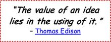
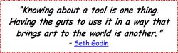

I like to describe CLM as an ongoing learning journey on which one is continuously pursuing and discovering new knowledge, improving one’s understanding, and creating new ideas. The basics of learning, such as filtering key concepts, repetition, reinforcement, and deep processing, are all important features embedded within CLM, but the most important attributes of CLM are making connections, deep thinking, inquiry through questions, meaningful learning, and applying what you’ve learned.

Learning is most effective when it’s personally meaningful to the learner. That happens when you take ownership of your learning by developing your PLN, shaping what and how you learn, engaging fully in your own learning, and applying what you’ve learned. Although CLM is not a single, one-size-fits-all solution, I hope you find it to be a useful framework, one you can customize and adjust to optimize your personal learning.
Now that you’ve successfully plowed your way through the book, are you wondering what to do next?

My suggestion: start mapping! We learn most by doing. Put the book away and make your first map. By mapping, you’ll put into practice what you’ve learned, and that will keep you motivated to keep learning and doing.
If you need inspiration, look through some of the 250,000 maps at http://www.biggerplate.com or through my compilations at http://pinterest.com/mindmaps.
You can also visit my website, www.ConciseLearning.com/lifelonglearning, for examples of visual maps used for lifelong learning, including personal dashboards, product summaries, self-development, training, and book summaries.
But beware: you don’t really need more reading. You need action. And the sooner you get started, the better.
If mapping for your own learning isn’t a powerful enough motivator, I’ll give you another. If you draw a map you’re particularly proud of and you’d like to share it with someone, e-mail it to me. I’ll take a look, and if you want, I’ll share it with the world on your behalf.
At any time, feel free to get in touch with questions or ideas. All the best to you for fun and productive learning and doing with visual maps.